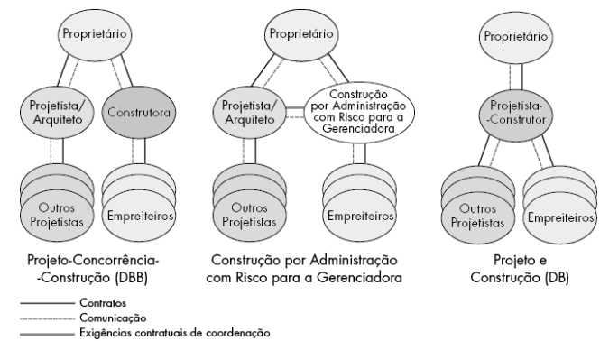
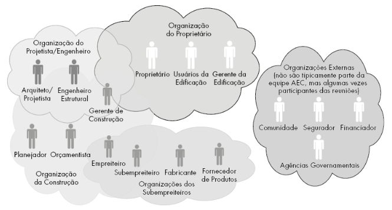
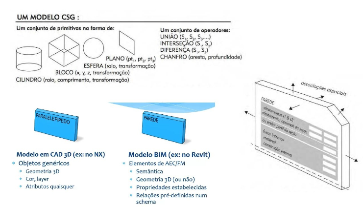
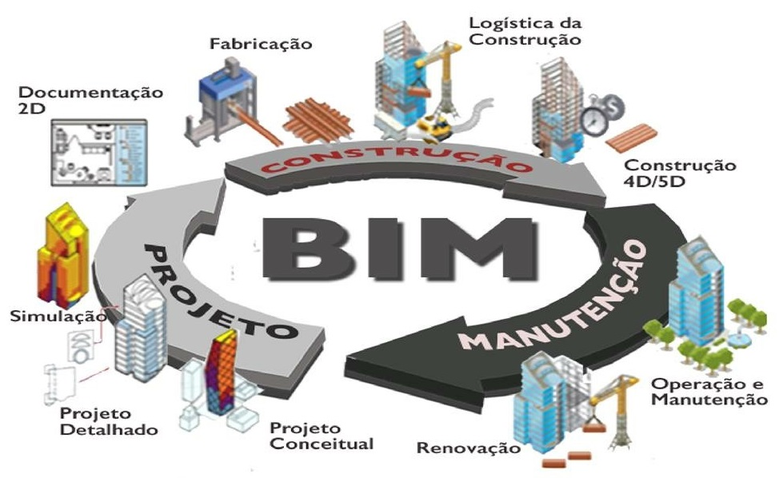
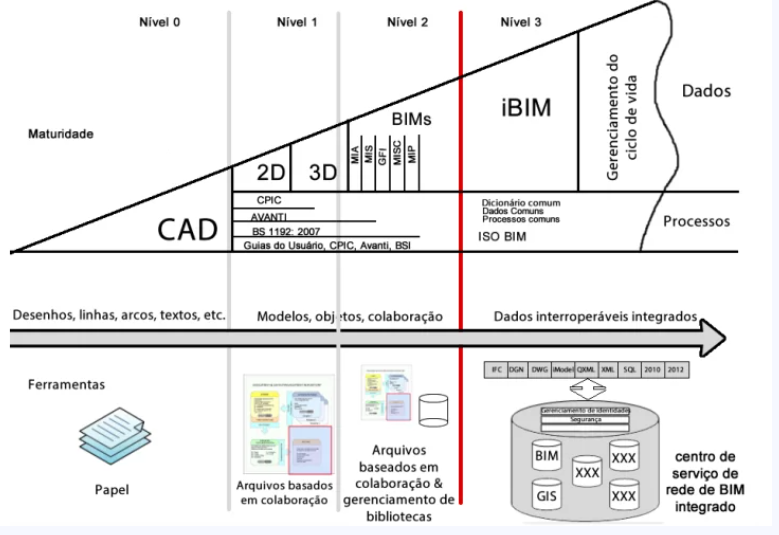

O que é BIM?#

Os modelos tradicionais, como Projeto-Concorrência-Construção e Design-Build, apresentam desafios significativos de fragmentação, falta de integração e comunicação ineficiente entre os diferentes atores do projeto, como proprietários, projetistas, construtores e subempreiteiros. Essa fragmentação gera conflitos, atrasos, retrabalhos e impactos no orçamento e cronograma das obras.

O BIM (Building Information Modeling) resolve esses problemas ao integrar todas as disciplinas e partes interessadas em um modelo único e centralizado. O uso do BIM promove a colaboração em tempo real, permitindo acesso transparente a informações do projeto, como prazos, orçamentos e especificações técnicas. Além disso, facilita a visualização em 3D, melhora a tomada de decisões e aumenta a eficiência na gestão de recursos e execução.

Em geral, a estrutura interna de uma instância de um objeto, como definida dentro de um sistema de modelagem paramétrica, é um grafo orientado, onde os nós são classes de objetos com parâmetros ou operações que constroem ou modificam uma instância de objeto; links no grafo indicam relações entre os nós.

No modelo Design-Build, o BIM se destaca ao unificar o processo de projeto e construção, garantindo maior previsibilidade, controle e qualidade na entrega final. Assim, o BIM se alinha às boas práticas de gerenciamento de projetos propostas pelo PMBOK, como integração, gestão de recursos e controle de qualidade, tornando-se essencial para projetos mais eficientes e bem-sucedidos.
Com base na imagem fornecida, podemos extrair um resumo que organiza e descreve as aplicações do BIM ao longo do ciclo de vida da construção. Vou estruturar isso de forma clara e complementar com informações adicionais.
Aplicações do BIM no Ciclo de Vida da Construção#

1. BIM na Concepção#
Na fase inicial do projeto, o BIM é aplicado para:
Programa arquitetônico e concepção inicial.
Estudos de massa e modelagem volumétrica.
Estudos de movimentação de terra para otimização de cortes e aterros.
Estimativa preliminar de custos (macro-BIM).
Visualização do projeto em 3D, facilitando o entendimento pelo cliente.
2. BIM no Projeto#
Durante o desenvolvimento do projeto:
Modelagem 3D paramétrica com detalhamento.
Coordenação interdisciplinar (arquitetura, estrutura, instalações).
Detecção de interferências (clash detection) para evitar problemas na construção.
Aplicação de normas de desempenho e sustentabilidade (LEED, AQUA).
Documentação automatizada e extração de dados.
3. BIM no Planejamento#
O BIM contribui significativamente no planejamento da obra ao:
Extrair quantitativos diretamente do modelo.
Realizar o planejamento 4D (tempo) integrando cronogramas.
Simular recursos e custos (5D).
Melhorar a gestão de riscos e de recursos materiais e humanos.
Acompanhamento físico-financeiro da obra.
4. BIM na Análise Térmica/Energética#
Simulações térmicas e energéticas.
Avaliação do conforto térmico e desempenho energético.
Testes com diferentes materiais e soluções de projeto visando sustentabilidade.
5. BIM na Análise Estrutural#
Análise estrutural detalhada.
Integração entre modelos de cálculo e projetos estruturais.
Simulação de cargas e verificações normativas.
6. BIM na Construção#
Na fase de execução, o BIM permite:
Compatibilização dos projetos (arquitetura, estrutura, instalações).
Gestão de quantitativos e orçamento em tempo real.
Planejamento de canteiro de obras e logística.
Redução de erros por meio da visualização 3D.
Pré-fabricação de elementos e redução de desperdícios.
Monitoramento da execução e controle de qualidade.
7. BIM no Retrofit#
Aplicação do BIM em construções existentes:
Levantamento de condições existentes usando tecnologia como scanners a laser.
Criação de modelos as-built (modelos do que existe).
Planejamento de intervenções para reforma ou retrofit.
Simulações de novas soluções e desempenho.
8. BIM na Demolição#
Planejamento da demolição com foco em segurança.
Gestão de resíduos: materiais recicláveis e reaproveitamento.
Análise de deslocamentos e elementos estruturais para otimização do processo.
9. BIM na Operação e Manutenção (6D)#
Na fase pós-obra, o BIM se torna uma ferramenta poderosa para:
Gestão de facilities usando o modelo como base.
Importação do modelo BIM para sistemas CAFM (Computer-Aided Facility Management).
Planejamento de manutenção preventiva e corretiva.
Redução de custos operacionais com dados integrados ao longo do ciclo de vida.
As 10 Dimensões do BIM#

As 10 dimensões do BIM representam a evolução do uso de modelos digitais, indo muito além da simples representação em 3D. Elas permitem integrar tempo, custos, sustentabilidade, segurança e operação ao modelo, agregando mais valor e eficiência em todas as etapas do ciclo de vida do projeto.
1D – Planejamento Conceitual#
O primeiro estágio, antes da criação de modelos digitais, envolve a definição conceitual do projeto. Nessa etapa, são discutidos objetivos, premissas e os principais elementos que guiarão o desenvolvimento do projeto.
2D – Documentação e Desenhos#
Corresponde às representações bidimensionais (plantas, cortes e elevações). Embora ainda seja a base em muitos projetos, o BIM evolui para integrar mais dimensões.
3D – Modelagem Tridimensional#
É a criação do modelo 3D inteligente, com geometrias e propriedades dos elementos construtivos (paredes, pilares, lajes, etc.). Essa representação visual melhora o entendimento do projeto, a comunicação e a detecção de interferências.
4D – Planejamento e Tempo#
Adiciona a dimensão do tempo ao modelo 3D. A partir do BIM 4D, é possível realizar simulações do cronograma da obra, visualizar o progresso da construção e identificar atrasos ou conflitos no planejamento.
5D – Custos#
O BIM 5D integra dados financeiros ao modelo, permitindo estimativas de custos detalhadas e atualizadas em tempo real. Isso facilita o controle orçamentário e o acompanhamento de gastos ao longo do projeto.
6D – Sustentabilidade#
A dimensão da sustentabilidade foca em análises de eficiência energética, consumo de recursos e impacto ambiental. O BIM 6D permite realizar simulações térmicas, de iluminação e de eficiência de materiais.
7D – Operação e Manutenção#
O BIM 7D estende o uso do modelo para a fase de operação do edifício, facilitando a gestão de facilities. O modelo inclui dados sobre os componentes (vida útil, manutenções necessárias, garantias), apoiando a operação ao longo do ciclo de vida da edificação.
8D – Segurança no Trabalho#
Essa dimensão incorpora práticas de segurança ocupacional durante o planejamento e execução da obra. O BIM 8D ajuda a identificar riscos, otimizar o layout do canteiro de obras e criar medidas de prevenção de acidentes.
9D – Lean Construction#
O BIM 9D aplica os conceitos de Lean Construction para melhorar a produtividade e reduzir desperdícios. Ele ajuda a planejar fluxos de trabalho, otimizar processos e sincronizar as atividades de construção.
10D – Industrialização da Construção#
O BIM 10D integra o processo de industrialização e pré-fabricação. Com ele, é possível planejar componentes modulares, otimizando a produção fora do canteiro de obras, acelerando prazos e reduzindo custos.
Desafios no Uso do BIM#
Relatórios Adaptáveis: Relacionados ao princípio de adaptação ao contexto. Equipes precisam ajustar-se a tecnologias e processos específicos.
Resumo#
O BIM se estende por todo o ciclo de vida da edificação: da concepção e planejamento, passando pela construção e operação até o retrofit e demolição. Ele agrega dimensões como tempo (4D), custos (5D) e sustentabilidade (6D), permitindo uma gestão mais eficiente, colaborativa e integrada dos projetos.
BIM na Gestão de Projetos e Normas Relacionadas#
1. Introdução ao Tema#
Relação com o PMBOK#
Princípios do PMBOK como base para a adoção do BIM:
Foco no Valor: BIM contribui diretamente para geração de valor, reduzindo custos e entregando maior eficiência ao cliente.
Pensamento Sistêmico: BIM integra diferentes disciplinas e stakeholders em um único sistema digital.
Colaboração e Engajamento dos Stakeholders: O BIM facilita a colaboração e a comunicação visual entre todas as partes interessadas.
2. BIM na Gestão de Projetos#
Vantagens do BIM#
Alinhadas aos Princípios do PMBOK#
Visualização e Simulações:
Conexão com o princípio de entrega incremental de valor, pois o BIM permite antecipar problemas e planejar entregas eficazes.
Colaboração Multidisciplinar:
Relacionado ao princípio de engajamento ativo dos stakeholders. O BIM cria um ambiente onde todas as disciplinas colaboram com dados integrados.
Redução de Erros e Retrabalhos:
Apoiado pelo princípio de gestão de risco adaptativa. O BIM antecipa e resolve conflitos (clash detection) antes da execução.
Acompanhamento do Ciclo de Vida:
Conexão com responsabilidade e ciclo de vida do projeto, promovendo uma visão sistêmica da obra desde o planejamento até a operação.
3. Normas Relacionadas ao BIM#
Essas normas seguem padrões internacionais como os definidos pela ISO e pela organização buildingSMART, responsável pela estruturação dos modelos IFC (Industry Foundation Classes).

Normas ISO#
ISO 19650 (Gestão de Informações):
Parte 1: Conceitos e princípios.
Parte 2: Processo de entrega de informações ao longo do ciclo de vida do projeto.
Conexão com o princípio de pensamento sistêmico, integrando informações em um único modelo.
ISO 12006-2: Estruturação de classificação para construção.
ISO 29481: Fluxo de informações em projetos colaborativos, em linha com o princípio de engajamento ativo dos stakeholders.
Normas Brasileiras (ABNT)#
A regulamentação do uso do BIM é complementada por normas técnicas nacionais e internacionais. No Brasil, a ABNT (Associação Brasileira de Normas Técnicas) publicou normas específicas que garantem a padronização e a interoperabilidade.
NBR 15575: Requisitos de desempenho em projetos, alinhados ao princípio de foco na qualidade.
NBR 15965: Estruturação e classificação de objetos no ambiente BIM.
ABNT NBR 13532: Elaboração de projetos de edificações – Processo de projeto.
Políticas Públicas#
Decreto n.º 10.306/2020:
Estratégia BIM BR, que promove o uso do BIM em obras públicas no Brasil.
Relacionado ao princípio de alinhamento estratégico com os objetivos nacionais.
O marco legal do BIM no Brasil está em desenvolvimento contínuo, especialmente devido ao seu impacto na eficiência dos processos da construção civil e da infraestrutura. A regulamentação busca padronizar o uso do BIM, promover a adoção em projetos públicos e privados, e facilitar a implementação em larga escala. Abaixo estão os principais pontos sobre o marco legal do BIM:
1. Estratégia Nacional de Disseminação do BIM (Estratégia BIM BR)#
A Estratégia BIM BR foi estabelecida pelo Decreto nº 9.983, de 22 de agosto de 2019, e serve como o principal marco legal para a implementação do BIM no Brasil.
Objetivos principais da Estratégia BIM BR:#
Promover a adoção do BIM no setor público e privado.
Incentivar o desenvolvimento e aplicação de normas técnicas.
Ampliar a capacitação e qualificação de profissionais e empresas.
Estimular o uso de ferramentas tecnológicas e a interoperabilidade.
Fomentar a inovação e a digitalização da construção civil.
2. Fases da Implementação do BIM no Brasil#
O Decreto nº 9.983 estabelece a obrigatoriedade gradual do BIM em obras públicas federais. A implementação está dividida em três fases principais:
Fase 1 (a partir de 2021)#
Aplicação do BIM em projetos de arquitetura e engenharia para a elaboração de modelos que contenham informações geométricas e dados sobre os elementos construtivos.
Fase 2 (a partir de 2024)#
Expansão para a execução de obras públicas, incluindo a gestão de informações do modelo durante a construção e o acompanhamento físico-financeiro.
Fase 3 (a partir de 2028)#
Aplicação do BIM em todo o ciclo de vida da construção, incluindo operação e manutenção das edificações e infraestrutura.
4. Uso do BIM em Licitações Públicas#
O marco legal do BIM introduz a necessidade do seu uso em contratações públicas. O BIM é obrigatório em contratos que envolvem:
Modelagem e elaboração de projetos.
Gestão e acompanhamento da obra.
Operação e manutenção de edifícios e infraestrutura pública.
A utilização do BIM nas licitações públicas visa:
Melhorar a transparência e eficiência dos processos.
Reduzir erros e retrabalhos durante a execução.
Facilitar o gerenciamento de custos e prazos.
5. Incentivos e Políticas Governamentais#
O Governo Federal promove incentivos ao uso do BIM por meio de:
Linhas de crédito específicas para empresas que adotam BIM.
Capacitação e treinamento de profissionais por meio de programas educacionais e parcerias.
Investimento em inovação tecnológica para pequenas e médias empresas.
6. Desafios na Implementação do Marco Legal#
Apesar dos avanços no marco regulatório, ainda existem desafios como:
A falta de capacitação adequada de profissionais.
A necessidade de infraestrutura tecnológica para pequenas empresas.
A resistência à mudança por parte de setores tradicionais da construção civil.
Conclusão#
O marco legal do BIM no Brasil, liderado pela Estratégia BIM BR e pelo Decreto nº 9.983, tem como foco modernizar e digitalizar o setor da construção civil. A regulamentação, junto com as normas ABNT e padrões internacionais, visa promover uma gestão mais eficiente, transparente e integrada dos projetos ao longo de todo o ciclo de vida das edificações e infraestruturas.
O BIM, ao ser implementado em fases, facilita a adaptação gradual do setor público e privado, garantindo inovação, economia de recursos e melhores resultados.
A diferença entre o Marco Legal do BIM no Brasil (consolidado principalmente pelo Decreto nº 9.983/2019) e o Decreto nº 10.306/2020 está nos objetivos, âmbito de aplicação e na regulamentação prática da adoção do BIM no setor público.
1. Decreto nº 9.983/2019 - Estratégia Nacional de Disseminação do BIM (Estratégia BIM BR)#
Objetivo:#
Estabelece a estratégia nacional para a implementação do BIM no Brasil, com diretrizes para estimular o uso da tecnologia no setor público e privado.
Foca na disseminação e no planejamento gradual da adoção do BIM em todo o ciclo de vida das construções.
Principais características:#
Define objetivos estratégicos de implementação do BIM.
Estrutura fases de adoção em projetos e obras públicas federais.
Orienta a necessidade de capacitação profissional e adoção de normas técnicas.
Tem um caráter mais amplo e programático, atuando como um plano de ação nacional.
2. Decreto nº 10.306/2020 - Uso do BIM na Execução Direta ou Indireta de Obras Públicas#
Objetivo:#
Regulamenta a aplicação prática do BIM nas licitações e contratações de obras e serviços de engenharia no âmbito da Administração Pública Federal direta e indireta.
Visa tornar obrigatório o uso do BIM em determinadas situações, operacionalizando a estratégia definida pelo Decreto nº 9.983/2019.
Principais características:#
Âmbito de aplicação: Licitações e contratações públicas federais.
Torna obrigatório o uso do BIM em fases específicas de projetos e obras públicas, sendo implementado em etapas.
Determina os requisitos e processos para utilização do BIM, como:
Modelagem e execução de projetos;
Gestão e manutenção de informações;
Planejamento e orçamento de obras públicas.
Especifica quais etapas do ciclo de vida da obra devem ser modeladas no BIM.
Principais Diferenças#
Aspecto |
Decreto nº 9.983/2019 |
Decreto nº 10.306/2020 |
|---|---|---|
Objetivo |
Estratégia nacional de disseminação do BIM. |
Regulamenta o uso obrigatório do BIM em obras públicas. |
Foco |
Planejamento e incentivo à adoção do BIM. |
Aplicação prática do BIM em licitações e obras públicas. |
Âmbito |
Nacional, com foco em setor público e privado. |
Administração Pública Federal direta e indireta. |
Obrigatoriedade |
Não obriga diretamente o uso do BIM. |
Torna o uso do BIM obrigatório em fases específicas. |
Aplicação gradual |
Define fases de implementação. |
Estabelece prazos e requisitos para obras públicas. |
Normatização |
Promove adoção de normas técnicas e capacitação. |
Define processos e modelos para utilização do BIM. |
Resumo#
O Decreto nº 9.983/2019 atua como estratégia nacional, definindo diretrizes para a adoção do BIM e promovendo sua implementação de forma ampla.
O Decreto nº 10.306/2020 é mais específico, focando em licitações públicas e exigindo a adoção obrigatória do BIM em obras financiadas pelo Governo Federal.
Portanto, o Decreto nº 10.306/2020 operacionaliza e complementa o Marco Legal do BIM definido pelo Decreto nº 9.983/2019.
Normatização e Modelos IFC no BIM#
Normatização no BIM#
A implementação do BIM em projetos de construção exige a adoção de normas técnicas que padronizem processos, dados e modelos. A normatização garante interoperabilidade, consistência e qualidade nos fluxos de trabalho entre diferentes softwares e profissionais.
Principais normas relacionadas ao BIM:
ISO 19650: Define os princípios e requisitos para gestão da informação ao longo do ciclo de vida da construção com o uso do BIM.
NBR 15965: Norma brasileira que estrutura o sistema de classificação da informação na construção civil.
IFC (Industry Foundation Classes): Padrão aberto que permite a interoperabilidade entre diferentes softwares BIM.
COBie (Construction Operations Building Information Exchange): Foca na entrega de dados para operação e manutenção de edificações.
A normatização facilita a colaboração entre as partes interessadas, desde o projeto até a operação da construção, garantindo que os dados possam ser utilizados de forma eficiente e sem perda de informações.
Modelos IFC (Industry Foundation Classes)#
O IFC é um padrão aberto e neutro desenvolvido pela buildingSMART para promover a interoperabilidade entre softwares BIM. Diferente de formatos proprietários (como .rvt ou .dwg), o IFC permite que modelos criados em uma plataforma sejam abertos e editados em outra, garantindo compatibilidade.
O modelo IFC atua como um formato aberto para troca de informações, promovendo a colaboração entre equipes multidisciplinares e garantindo que os dados permaneçam consistentes ao longo do ciclo de vida do projeto.
Características do IFC:#
É um formato de dados estruturado que descreve informações de elementos construtivos, como paredes, portas, lajes e sistemas (arquitetura, estrutura e instalações).
Permite representar geometria e metadados (propriedades e atributos dos elementos, como materiais e funções).
É utilizado em todas as fases do ciclo de vida do projeto: projeto, construção, operação e manutenção.
Vantagens do Uso de Modelos IFC#
Interoperabilidade: Facilita a troca de informações entre diferentes softwares (Revit, ArchiCAD, Tekla, entre outros).
Independência de Software: É um padrão aberto, não atrelado a um fornecedor específico.
Gerenciamento de Dados: Permite uma estrutura unificada de dados, essencial para colaboração.
Ciclo de Vida Completo: Os modelos IFC podem ser utilizados da concepção até a operação do edifício, com foco em gestão de facilities.
Aplicação Prática#
Por exemplo, ao trabalhar em um projeto de infraestrutura, como uma ponte, os profissionais podem criar o modelo em um software específico e exportá-lo em formato IFC. Esse modelo pode ser analisado por engenheiros estruturais, verificando interferências ou realizando simulações, sem precisar do mesmo software de origem.
BIM x Modelo BIM#
1. BIM (Building Information Modeling)#
O BIM é um processo ou metodologia colaborativa que envolve a criação, o uso e a gestão de informações digitais ao longo de todo o ciclo de vida de um projeto de construção (planejamento, projeto, execução, operação e manutenção). Ele não se restringe a uma ferramenta ou software, mas sim a uma abordagem integrada que conecta equipes, dados e processos.
O principal objetivo do BIM é melhorar a eficiência, reduzir erros, otimizar recursos e facilitar a comunicação entre os diferentes atores (projetistas, construtores, gestores e proprietários).
Características do BIM:
Colaboração entre disciplinas em um ambiente compartilhado.
Integração de dados para visualização, análise e simulação.
Aplicação em todas as fases do ciclo de vida do projeto.
** Modelo BIM**#
O Modelo BIM é o produto gerado a partir do processo BIM. Trata-se de uma representação digital tridimensional (3D) inteligente da construção, que armazena informações detalhadas sobre os elementos do projeto, como materiais, dimensões, custos, prazos e desempenho.
Diferente de um modelo 3D tradicional, o modelo BIM é um banco de dados visual e paramétrico que permite associar informações a cada componente do projeto, facilitando análises avançadas, como:
Quantificação de materiais
Simulação de cronogramas (4D)
Estimativas de custos (5D)
Análises energéticas e estruturais
Resumo: Enquanto o BIM é o processo colaborativo, o Modelo BIM é o resultado digital desse processo, sendo utilizado como base para análises, execução e operação do empreendimento.
Essa distinção é fundamental para entender como o BIM revoluciona a gestão de projetos, pois combina processos integrados com modelos digitais precisos, gerando eficiência e melhores resultados.